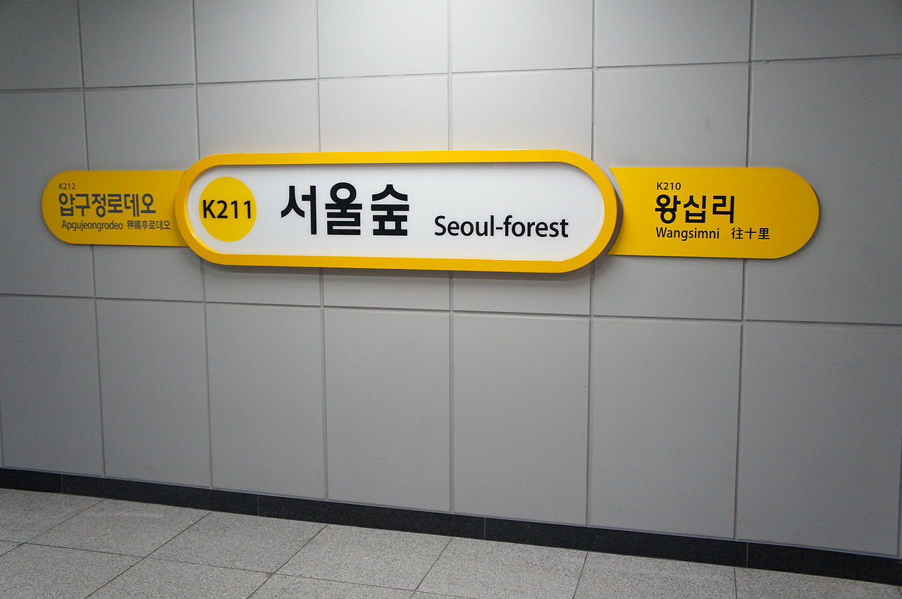
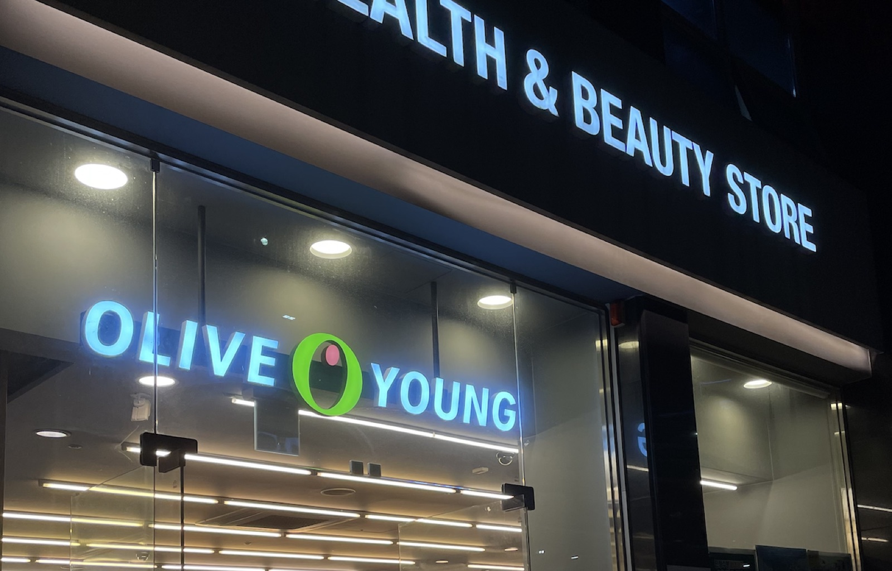
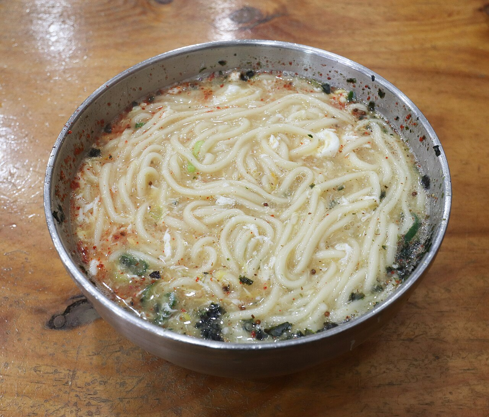
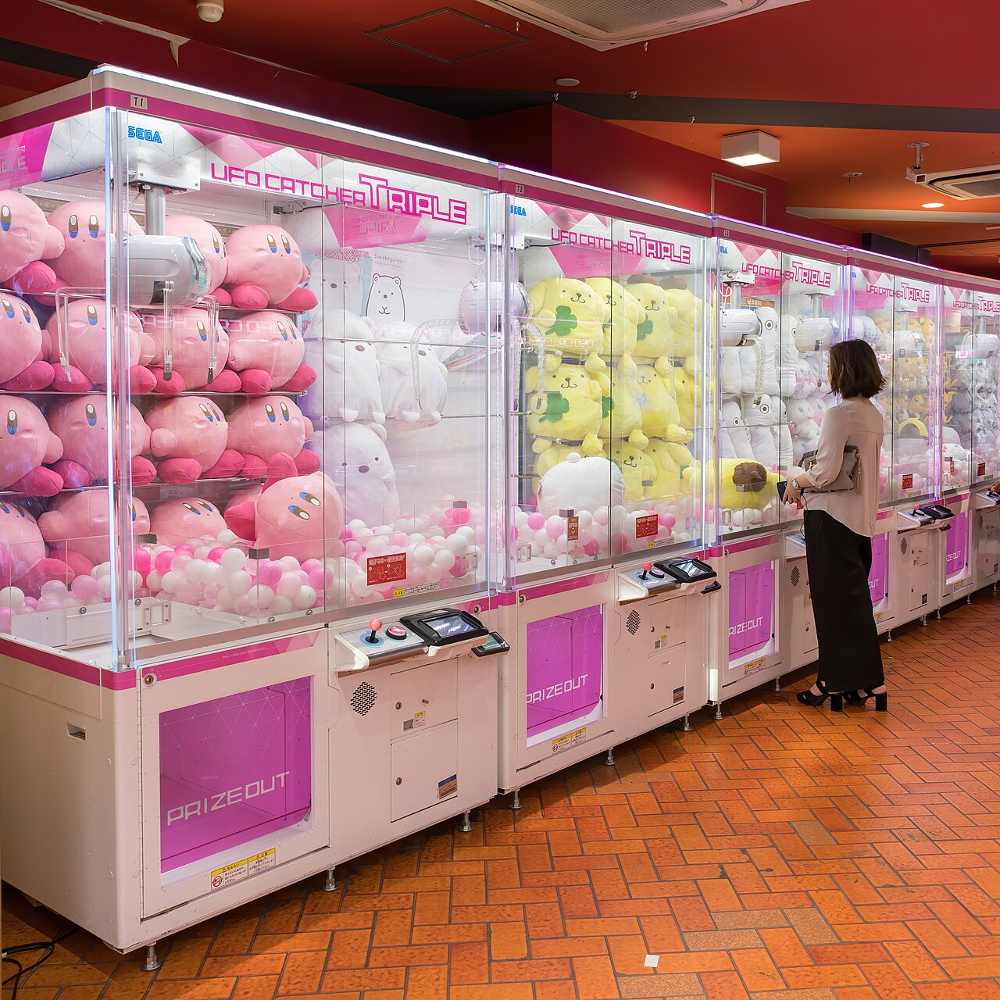
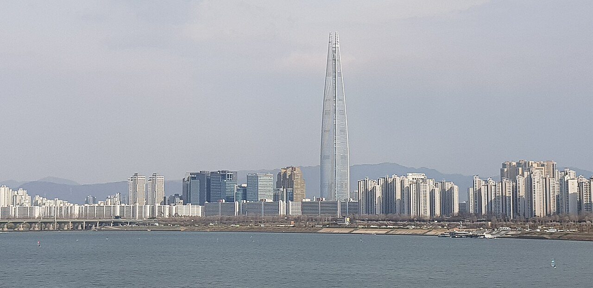
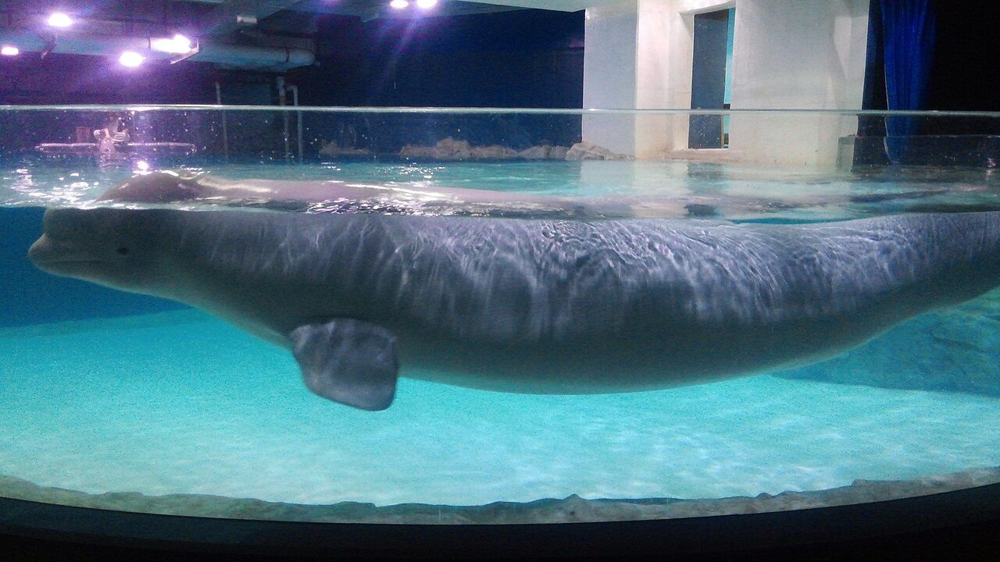
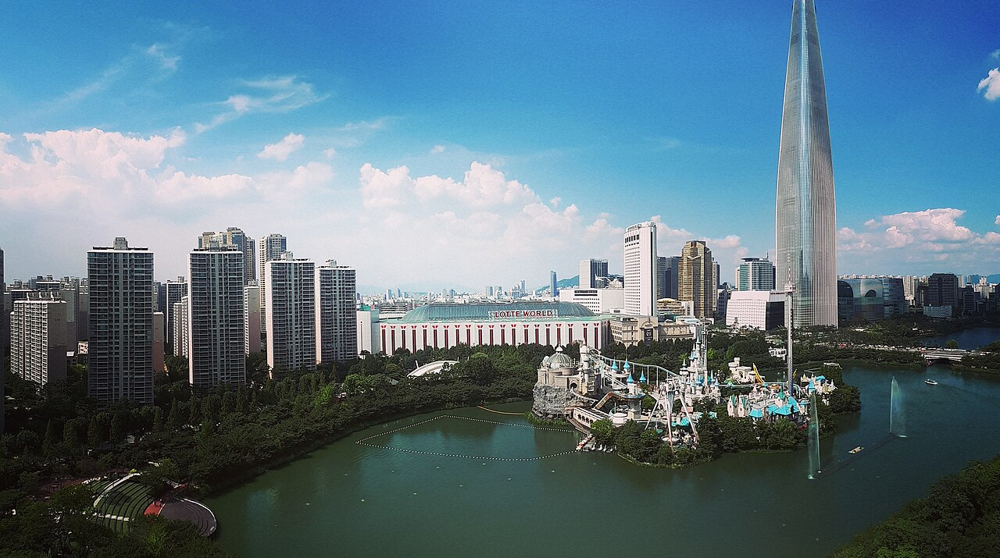
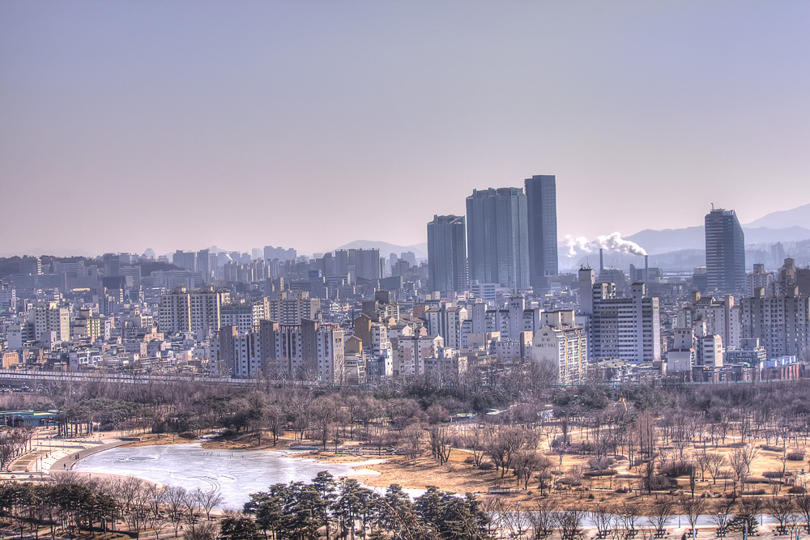

Seoul · Day 3 · 聖水 Seongsu / 蠶室 Jamsil
D325 JUN 四
聖水掃店 → 蠶室樂天塔黃昏夜景
沿鍊武場街一條街由工廠改建區掃到精品帶，再乘二號線直達蠶室，於樂天世界塔上看石村湖日落與夜景。上午用戶外配額逛紅磚街，正午起轉入室內大店防曬防雨。
路線軸 · 11 站
聖水站鍊武場街步行帶 → 二號線直達蠶室 → 樂天世界購物中心垂直動線。聖水多舊倉庫改建、舖普遍 11:00 才開；蠶室全室內商場＋觀景塔。黃昏以石村湖散步與樂天塔觀景作壓軸，晚餐放塔後約 20:15。
聖水鍊武場街 紅磚倉庫一條街 08:40–14:00 · 城東區
1
08:40
必到
洋蔥咖啡 聖水本店 어니언 성수
舊工廠改建的紅磚天井空間，招牌糖粉山可頌 pandoro 與鹽包，平日清晨人最少。
價 ₩4,000–7,000／件 · HKD 187步行 聖水站 3 分tag 全家
Rain戶外與天台座位多，雨天改坐室內一樓，或順移至下一站 Monami 室內店

「聖水洞的人氣廢墟咖啡，老屋改造的工業風空間裡各種麵包任你挑，招牌雪山麵包 pandoro 配美式咖啡最對味。」— yukigo.tw · Yuki's Lazy Channel
2
09:45
必到
Monami 文具概念店 聖水 모나미 스토어 성수
可親手拼裝專屬 153 原子筆與客製筆記本的文具 DIY 體驗店，是聖水少數一早開門的室內手作點。
價 DIY 套裝 ₩8,000–15,000 · HKD 41–78步行 洋蔥 6 分tag 媽媽手工藝
Rain本身全室內，可作雨天首站
「文具迷的天堂，可調出專屬墨水色、再親手組裝一支自己的 153 原子筆，舊工廠原址改建很有故事。」— joas.kr · JOAS 部落格
3
10:15
可選
大林倉庫紅磚街散步 대림창고
五十年代紅磚倉庫外牆與鐵窗是聖水最具代表性的拍照背景，沿街即可取景。
價 免費步行 Monami 4 分tag 全家
Rain雨天跳過，直接進 Olive Young N 與 Musinsa 室內大店
「大林倉庫是聖水洞紅磚廢墟風的代表，舊倉庫外牆與鐵窗一整排都是好拍的背景，被稱作首爾的布魯克林。」— bobbytravel.tw · 波比看世界
4
10:30
必到
Olive Young N 聖水旗艦 올리브영N 성수
五層樓全韓最大美妝旗艦，是聖水少數 10:00 開門的大店，正好填補上午空檔。
價 面膜/防曬 ₩5,000–20,000 · HKD 311步行 紅磚街 5 分tag 全家
Rain本身全室內冷氣，即雨天避雨大店；購物滿 ₩15,000 可即場退稅

「Olive Young 在聖水打造的五層樓全新旗艦，是規模最大的 K-beauty 體驗場，並設即時退稅服務。」— visitkorea · Visit Korea
5
11:00
必到
Musinsa Megastore 聖水 무신사 메가스토어 성수
二千坪四層、逾千個品牌的全韓最大時裝美妝複合店，附全韓最長波鞋牆，主打高性價比男女裝。
價 tee ₩20,000 起 · HKD 104 起步行 Olive Young 3 分tag 仔男裝
Rain挑高室內大空間，是鍊武場街最佳避雨點

「Musinsa 在聖水開出全韓最大的時裝選物店，地下一層至四層共二千坪，以 Kicks 波鞋、Run 跑步、Girls 女裝等主題分區，開幕首週末逾四萬人到訪。」— insideseoul · Inside Seoul
6
11:50
可選
Point of View 設計文具選物 포인트오브뷰 성수
以 TOOL／SCENE／ARCHIVE 三層主題策展的設計文具選物店，氛圍如美術館，適合慢逛挑手作素材。
價 設計小物 ₩5,000–40,000 · HKD 26–207步行 Musinsa 4 分tag 媽媽手工藝
Rain本身室內，可與 Musinsa 室內串連
「從創作者視角策展的概念文具店，TOOL／SCENE／ARCHIVE 三層各有不同選物，從紙張、書寫工具到激發靈感的物件一應俱全。」— @pointofview.seoul · Visit Seoul
7
午餐
12:30
12:30
必到
Jojo 刀削麵 聖水店 조조칼국수 성수점
蜆湯湯底清甜零辣，是一千以上評價的翻枱快人氣店，CatchTable 可遠距取籌。
價 刀削麵 ₩10,000 · 煎餅 ₩15,000 · HKD 181步行 Point of View 6 分tag 爸爸食物
Rain室內用餐，本身即雨天可行；落單時講明海鮮煎餅要不辣

「蜆湯刀削麵湯底清甜不辣，配章魚海鮮煎餅是聖水翻枱很快的人氣午餐，地址在聖水一路 8 街 55。」— @jojo_kalguksu · Instagram
8
13:20
必到
Cat&F 貓咖啡烘焙店 캣앤에프
聖水以貓造型裝飾的烘焙咖啡店，招牌是自家研發的玉米鹽包，外酥內潤、鹹甜平衡，並有貓形與水豚造型麵包。
價 飲品 ₩6,000–8,000 · HKD 31–41步行 Jojo 5 分tag 爸爸貓
Rain本身全室內，正好作雨天落腳點

「外層酥脆、內層濕潤的玉米鹽包，鹹味恰到好處，配上鮮奶油形成完美的甜鹹組合，以用心做好單一品項見長。」— diningcode · DiningCode
9
13:50
必到
LuckyPop 夾娃娃機樂園 聖水 럭키팝 성수
聖水新開的四層夾娃娃機與扭蛋大樓，機台與打卡角落眾多，常逛上約兩小時。
價 每抽 ₩1,000–2,000 · HKD 5–10步行 Cat&F 3 分tag 仔夾娃娃
Rain本身全室內，雨天可延長停留

「聖水又一個玩樂據點，四層大型夾娃娃與扭蛋空間，從公仔到可愛周邊應有盡有，每層主題不同、夾的樂趣加倍，散步順道輕鬆一逛剛好。」— @seoul_sources · Threads
蠶室樂天世界 室內商場 + 觀景塔黃昏夜景 15:00–20:15 · 松坡區
10
15:00
必到
樂天世界購物中心 롯데월드몰
蠶室站室內直結的大型商場，5 樓 Kakao Friends、B1 無印與吉卜力專櫃、B2 Daiso 一次逛齊。
價 Kakao Friends 手信 ₩10,000–30,000交通 二號線蠶室站直結tag 全家
Rain全室內，本身即正午防曬與防雨主場；退稅櫃位在 2 樓與 B1

「松坡區的大型購物複合體，地下廣場與樂天世界塔相連，總樓面逾二十四萬平方米，是首爾最具規模的室內商場之一。」— wikipedia · Wikipedia
11
16:00
必到
樂天世界水族館 롯데월드 아쿠아리움
商場地庫內、收容六百多種五萬五千隻海洋生物的大型水族館，設大型海洋生態缸與十三個主題展區。
價 成人 ₩35,000（券折後約 ₩25,500 起）· HKD 396–544步行 商場 B1 · 3 分tag 爸爸水族館
Rain本身全室內，雨天最佳備案

「館內有六百多種、五萬五千隻海洋生物與世界最大級的海洋生態缸，位於樂天世界購物中心內、緊鄰樂天塔，全家同遊很合適，線上購票掃 QR 即入。」— klook · Klook
12
18:30
必到
石村湖散步看塔倒影 석촌호수
日落前在西湖一側可拍到樂天塔倒映湖面的經典構圖，是上塔前的暖場散步。
價 免費步行 商場東側 5 分tag 全家
Rain雨天湖面水珠反射另有氛圍，撐傘可上鏡；下雨太大則直接回商場 6 樓望湖咖啡座

「環繞樂天世界塔的人工湖公園，分東西兩湖、四周植滿櫻樹與步道，是拍攝高塔倒映湖面的經典地點。」— visitseoul · Visit Seoul
13
19:10
必到
Seoul Sky 樂天世界塔觀景台 서울스카이
117–123 樓觀景塔，118 樓設世界最高室內玻璃地板，黃昏上塔可一次看齊白天、火燒雲與夜景三段。
價 成人 ₩27,000–33,000 · HKD 419–513步行 石村湖 → 商場 B1 · 8 分tag 全家
Rain120 樓室外露台遇大雨強風會封，室內觀景層照常開放；當日清晨天色太灰可考慮跳過省約 ₩99,000（N 首爾塔 D4 仍有後備）

「韓國最高的觀景台，117 至 123 樓可看 360 度首爾全景，傍晚上塔能一次欣賞白天、日落與夜景三段最划算。」— kkday · KKday 部落格
14
晚餐
20:15
20:15
必到
一月烤肉 方夷食街本店 일월고기
藏在方夷食街、本地上班族推介的炭火烤肉店，肉質厚實且由店員代客烤好，深夜營業正好接 Seoul Sky 之後。
價 五花腩 ₩18,000 · 韓牛眼肉 ₩25,000 · HKD 373–466步行 樂天塔 12 分tag 爸爸食物
Rain由樂天塔至方夷食街約步行 10 分鐘，雨天可乘短程的士；不想外出則改商場 B1 非連鎖食肆

「方夷食街的五花腩與豬皮人氣店，肉質鮮嫩多汁、由店員代客烤製，用餐方便又美味。」— diningcode · DiningCode
15
候選
二選一
Donsunjang（候選）돈순장
由 Instagram 連結加入的蠶室區晚餐候選，作為 14 號「一月烤肉」的替代選擇，1v1 評估時再決定是否扶正。
址 松坡區蠶室洞 187-5（新川／石村湖一帶）⚠ 與 14 號一月烤肉二擇一tag 全家
Rain室內食肆，雨天可行；若當日改選 14 號一月烤肉則此項略過
D3 · 25 Jun 四 2026 · 相+影評版 · 聖水鍊武場街（11:00 才開）→ 二號線蠶室 → 樂天塔黃昏 · 影評節錄自部落格/IG/Threads，到場再核營業狀態
地圖 Naver 到場核 · 1 HKD ≈ 195 ₩ · Generated by Claude Code
地圖 Naver 到場核 · 1 HKD ≈ 195 ₩ · Generated by Claude Code